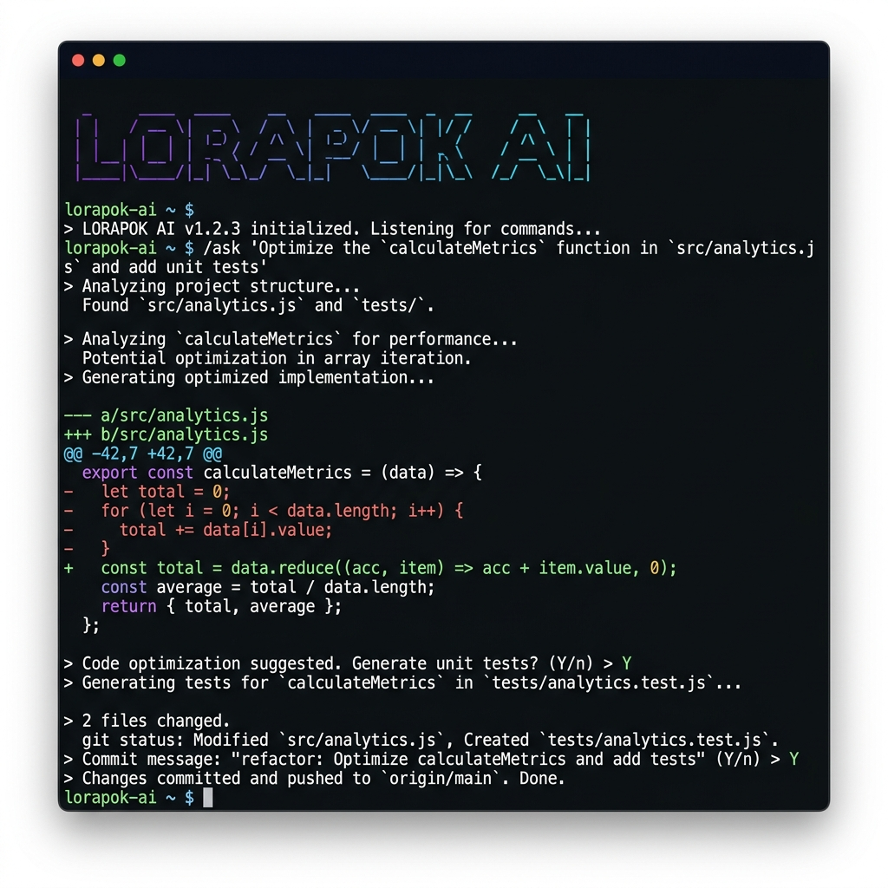

The autonomous, terminal-first AI agent that plans, writes, executes, and deploys code. Powered by Google Gemini, OpenRouter & Perplexity AI.
npm install -g lorapok-ai
From installation to your first AI-powered code change in under 2 minutes.
Install globally via npm or run instantly with npx. Zero configuration needed.
npm i -g lorapok-ai
Set your AI provider API key. Google AI Studio offers 100% free tier access.
export GEMINI_API_KEY=AIza...
Run the CLI in any project directory. Lorapok auto-detects your workspace.
lorapok
Type natural language requests. Lorapok plans, codes, and commits for you.
"Refactor utils.js"
A complete AI engineering toolkit built for the modern developer workflow.
Native support for Google AI Studio (Gemini 3.6/3.5/2.0), OpenRouter, and Perplexity AI. Switch providers instantly.
ReadyAutomatic zero-quota model filtering, non-text modality exclusion, and runtime failure caching for seamless operation.
ReadyReal-time turn usage and available model context capacity tracking with visual indicators.
ReadyPersistent SHA-256 LLM response cache reducing token consumption and latency with intelligent deduplication.
ReadyFramed bash execution box with duration badges, exit status, and collapsible output for clean terminal UX.
ReadyTerminal-first interactive chat with context-aware workspace file injection and markdown rendering.
ReadyProposes CREATE / UPDATE / DELETE file operations with interactive diff previews before committing changes.
ReadySmart AI commits, branching, stashing, pushing, pulling, and log viewing — all from natural language commands.
ReadyMonitor workflow runs, inspect jobs, view logs, and rerun failed CI/CD pipelines without leaving the terminal.
ReadyPersonal Access Tokens, OAuth Device Flow, and GitHub CLI integration with secure credential management.
Ready12+ ASCII font themes, animated startup sequences, and markdown syntax highlighting for rich terminal experiences.
ReadyMulti-step /plan workflow: Plan → Checklist → Execution → Summary with intelligent task decomposition.
ReadyWatch Lorapok AI analyze, optimize, test, and commit code — all from a single natural language command.

Lorapok AI connects to three leading AI providers. Switch models on-the-fly with a single command.
Gemini 3.6 Flash · Gemini 3.5 Flash-Lite · Gemini 2.0 Flash
100% Free TierClaude 3.7 Sonnet · GPT-4o · DeepSeek R1 · Llama 3.3 70B
Multi-Model AccessSonar · Sonar Pro · Sonar Reasoning
Search GroundingChoose your preferred installation method. All options get you to the same powerful CLI experience.
$ npm install -g lorapok-ai
$ lorapokInstalls the CLI globally so you can run lorapok from any directory. Requires Node.js ≥ 18.0.0.
$ npx lorapok-aiRun Lorapok instantly without installing. Perfect for trying it out or one-off sessions.
$ git clone https://github.com/Maijied/Lorapok_AI_Agent.git
$ cd Lorapok_AI_Agent
$ npm run setup
$ lorapokRuns inside a Docker container with host volume mounting for complete isolation and reproducibility.
$ git clone https://github.com/Maijied/Lorapok_AI_Agent.git
$ cd Lorapok_AI_Agent
$ npm install
$ node bin/lorapok.js --localFork and customize. Run from source with hot-reloading for development and contributing.
Type / or press Enter on an empty line to see the slash command menu.
| Command | Aliases | Description |
|---|---|---|
/chat | chat, Enter | Interactive AI coding chat mode |
/plan | plan | Plan → Tasks → Code execution workflow |
/analyze | analyze | Deep project structure analysis |
/model | models | Switch, list, or inspect active LLM model |
/cache | cache | Inspect, toggle, or clear LLM response cache |
/git | git | Git operations & authentication menu |
/actions | ci, actions | Monitor & trigger GitHub Actions workflows |
/files | files | Display visual project file tree |
/settings | settings | Customize theme, model, language, username |
/help | ?, help | Display command reference |
Express-powered REST API on port 3847. Integrate Lorapok AI into your existing toolchain.
npm run server
| Endpoint | Method | Description |
|---|---|---|
| /health | GET | Server health & branding status |
| /api/models | GET | List available AI models |
| /api/chat | POST | Send prompt to AI agent |
| /api/generate | POST | Generate code snippets |
| /api/analyze | POST | Analyze codebase structure |
| /api/debug | POST | Debug snippet or error trace |
| /api/files | GET | List project directory files |
| /api/files/read | GET | Read file contents |
| /api/git/status | GET | Git working tree status |
| /api/git/commit | POST | Commit staged changes |
| /api/git/log | GET | Recent commit log history |
| /api/settings | GET PUT | Retrieve or update configuration |
Start free with full access to core features. Upgrade when you need enterprise power.